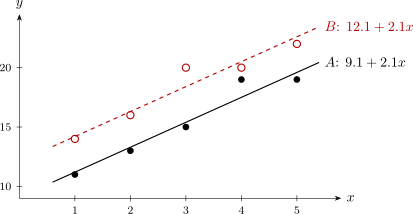

9.2 Fitting and testing
The models are fitted by ordinary least squares, with \(z\) and \(xz\) treated as regressors like any other. Two results explain what the fits are.
Theorem 9.2.1. Fitting the separate-lines model gives the same fitted values as fitting a straight line to each group on its own. If the separate fits are \(\hat y = \hat a_0 + \hat a_1x\) for group \(A\) and \(\hat y = \hat b_0 + \hat b_1x\) for group \(B\), then \[ \hat \beta _0 = \hat a_0, \quad \hat \beta _1 = \hat a_1, \quad \hat \beta _2 = \hat b_0 - \hat a_0, \quad \hat \beta _3 = \hat b_1 - \hat a_1 , \] and \(SS_{\mathrm {Res}} = SS_{\mathrm {Res},A} + SS_{\mathrm {Res},B}\), on \(n - 4\) degrees of freedom.
Proof. The columns \(\mathbf {1}, \mathbf {x}, \mathbf {z}, \mathbf {xz}\) span the same space as \(\mathbf {1} - \mathbf {z}\), \((\mathbf {1} - \mathbf {z})\mathbf {x}\), \(\mathbf {z}\), \(\mathbf {zx}\) (products taken entry by entry), since each set is a combination of the other. In the second set, the first two columns are zero on group \(B\) and the last two are zero on group \(A\). Order the observations with group \(A\) first; then the second matrix is block diagonal, \[ \begin {bmatrix} \mathbf {X}_A & \mathbf {0} \\ \mathbf {0} & \mathbf {X}_B \end {bmatrix} , \] where \(\mathbf {X}_A\) and \(\mathbf {X}_B\) are the simple-regression matrices of the two groups. The sum of squares \(\|\mathbf {y}_A - \mathbf {X}_A\mathbf {a}\|^2 + \|\mathbf {y}_B - \mathbf {X}_B\mathbf {b}\|^2\) separates, and is minimised by minimising each part, that is, by the separate least-squares lines. The fitted values and residuals are those of the separate fits. Matching the means of the two parametrisations at \(z = 0\) and at \(z = 1\) gives the coefficients. □
Theorem 9.2.2. In the parallel-lines model, the common slope is the pooled within-group slope, \[ \hat \beta _1 = \frac {S_{xy,A} + S_{xy,B}}{S_{xx,A} + S_{xx,B}} , \] where \(S_{xx,A}\), \(S_{xy,A}\) are the corrected sums of squares and products within group \(A\), and similarly for \(B\). The fitted lines pass through the group means \((\bar x_A, \bar y_A)\) and \((\bar x_B, \bar y_B)\), so \[ \hat \beta _0 = \bar y_A - \hat \beta _1\bar x_A , \qquad \hat \beta _2 = (\bar y_B - \bar y_A) - \hat \beta _1(\bar x_B - \bar x_A) . \]
Proof. Apply the added-variable theorem (Theorem 3.11.4) with \(x\) as the added regressor and \(\mathbf {1}\), \(\mathbf {z}\) as the others. Regressing \(x\) on \(\mathbf {1}\) and \(\mathbf {z}\) fits a separate mean to each group (the same argument as in Theorem 9.2.1, with no slope), so the residual is \(u_i = x_i - \bar x_A\) for group \(A\) and \(x_i - \bar x_B\) for group \(B\). Then \[ \hat \beta _1 = \frac {\sum u_iy_i}{\sum u_i^2} = \frac {\sum _A(x_i - \bar x_A)y_i + \sum _B(x_i - \bar x_B)y_i}{\sum _A(x_i - \bar x_A)^2 + \sum _B(x_i - \bar x_B)^2} , \] which is the stated formula. The normal equation for the intercept column, \(\sum e_i = 0\), and the one for \(\mathbf {z}\), \(\sum _B e_i = 0\), together give \(\sum _A e_i = 0\) and \(\sum _B e_i = 0\): within each group the residuals add to zero, so each line passes through its group’s mean point. □
When the groups have the same mean of \(x\), as in the next example, \(\hat \beta _2 = \bar y_B - \bar y_A\); otherwise the difference in mean response is adjusted for the difference in \(x\). This adjusted comparison is the classical analysis of covariance, and \(x\) is then called a covariate.
The tests
Each simplification of the separate-lines model is a hypothesis about \(\beta _2\) and \(\beta _3\), tested by the extra-sum-of-squares principle (Subsection 3.11) with the separate-lines model as the full model.
- Parallelism, \(H_0\colon \beta _3 = 0\): compare the parallel-lines model with the separate lines, a partial \(F\) on \(1\) and \(n - 4\) degrees of freedom (equivalently the \(t\)-test for \(\beta _3\)).
- Coincidence, \(H_0\colon \beta _2 = \beta _3 = 0\): compare one common line with the separate lines, a partial \(F\) on \(2\) and \(n - 4\) degrees of freedom.
- Equal intercepts given parallelism, \(H_0\colon \beta _2 = 0\) in the parallel-lines model: the \(t\)-test for \(\beta _2\), on \(n - 3\) degrees of freedom. This is the usual comparison of the two groups after allowing for \(x\).
The parallelism test is done first: if the slopes differ, the difference between the groups depends on \(x\), and a single number \(\beta _2\) does not describe it.
Example 9.2.3. Two maize varieties, \(A\) and \(B\), were each grown on five plots with \(x = 1, 2, 3, 4, 5\) bags of fertiliser per hectare, giving yields \(y\) (bags per hectare):
| \(x\) | 1 | 2 | 3 | 4 | 5 |
| Variety \(A\) | 11 | 13 | 15 | 19 | 19 |
| Variety \(B\) | 14 | 16 | 20 | 20 | 22 |
Compare the varieties, allowing for fertiliser.
Solution. Separate lines. In each group \(\bar x = 3\) and \(S_{xx} = 10\). For \(A\), \(\bar y_A = 77/5 = 15.4\) and \(S_{xy,A} = -2(11) - 1(13) + 0 + 1(19) + 2(19) = 22\); for \(B\), \(\bar y_B = 92/5 = 18.4\) and \(S_{xy,B} = -2(14) - 1(16) + 0 + 1(20) + 2(22) = 20\). So \begin {align*} A:\quad \hat y &= 15.4 - 2.2 \times 3 + 2.2x = 8.8 + 2.2x , \\ B:\quad \hat y &= 18.4 - 2.0 \times 3 + 2.0x = 12.4 + 2.0x . \end {align*}
For \(A\) the fitted values are \(11\), \(13.2\), \(15.4\), \(17.6\), \(19.8\), so the residuals are \(0\), \(-0.2\), \(-0.4\), \(1.4\), \(-0.8\), with \(SS_{\mathrm {Res},A} = 2.8\). For \(B\) the fitted values are \(14.4\), \(16.4\), \(18.4\), \(20.4\), \(22.4\) and the residuals \(-0.4\), \(-0.4\), \(1.6\), \(-0.4\), \(-0.4\), with \(SS_{\mathrm {Res},B} = 3.2\). By Theorem 9.2.1 the separate-lines model is \[ \hat y = 8.8 + 2.2x + 3.6z - 0.2xz , \] with \(SS_{\mathrm {Res}} = 6.0\) on \(10 - 4 = 6\) degrees of freedom, so \(MS_{\mathrm {Res}} = 1.0\).
Parallel lines. By Theorem 9.2.2, \(\hat \beta _1 = (22 + 20)/(10 + 10) = 2.1\), \(\hat \beta _0 = 15.4 - 2.1 \times 3 = 9.1\), and since \(\bar x_A = \bar x_B\), \(\hat \beta _2 = 18.4 - 15.4 = 3.0\): \[ \hat y = 9.1 + 2.1x + 3.0z . \] Its residual sum of squares is \(SS_{\mathrm {Res}} = 6.2\) on \(7\) degrees of freedom (the two pooled within-group sums of squares, \(\sum _A(y - \bar y_A)^2 + \sum _B(y - \bar y_B)^2 = 51.2 + 43.2 = 94.4\), less \(\hat \beta _1(S_{xy,A} + S_{xy,B}) = 2.1 \times 42 = 88.2\)).
One common line. Ignoring the variety, \(\bar y = 16.9\), \(S_{xx} = 20\), \(S_{xy} = 42\) (the groups have the same \(x\) values), so \(\hat y = 16.9 - 6.3 + 2.1x = 10.6 + 2.1x\). Here \(SS_T = 116.9\) and \(SS_{\mathrm {Res}} = 116.9 - 2.1 \times 42 = 28.7\) on \(8\) degrees of freedom.
Tests, with \(MS_{\mathrm {Res}} = 1.0\) from the separate-lines model: \begin {align*} \text {parallelism:}\quad F &= \frac {6.2 - 6.0}{1.0} = 0.2 < F_{0.05,1,6} = 5.99 , \\ \text {coincidence:}\quad F &= \frac {(28.7 - 6.0)/2}{1.0} = 11.35 > F_{0.01,2,6} = 10.92 . \end {align*}
The slopes do not differ significantly, but the lines are not the same. In the parallel-lines model, \[ \operatorname {Var}(\hat \beta _2) = \sigma ^2\left (\frac {1}{5} + \frac {1}{5}\right ) = 0.4\sigma ^2 \] (here \(\hat \beta _2 = \bar y_B - \bar y_A\), a difference of two independent means of five), and with \(MS_{\mathrm {Res}} = 6.2/7 = 0.886\), \(\operatorname {se}(\hat \beta _2) = \sqrt {0.886 \times 0.4} = 0.595\) and \(t = 3.0/0.595 = 5.04\) on \(7\) degrees of freedom, highly significant. A \(95\%\) confidence interval for the difference is \(3.0 \pm 2.365 \times 0.595 = 3.0 \pm 1.41\), that is \((1.6,\ 4.4)\) bags per hectare.
Conclusion. Both varieties respond to fertiliser at the same rate, about \(2.1\) bags of maize per bag of fertiliser, and variety \(B\) yields about \(3\) bags per hectare more than \(A\) at every fertiliser level.

Questions on this section
Stuck on something here? Ask below and it stays attached to this topic.